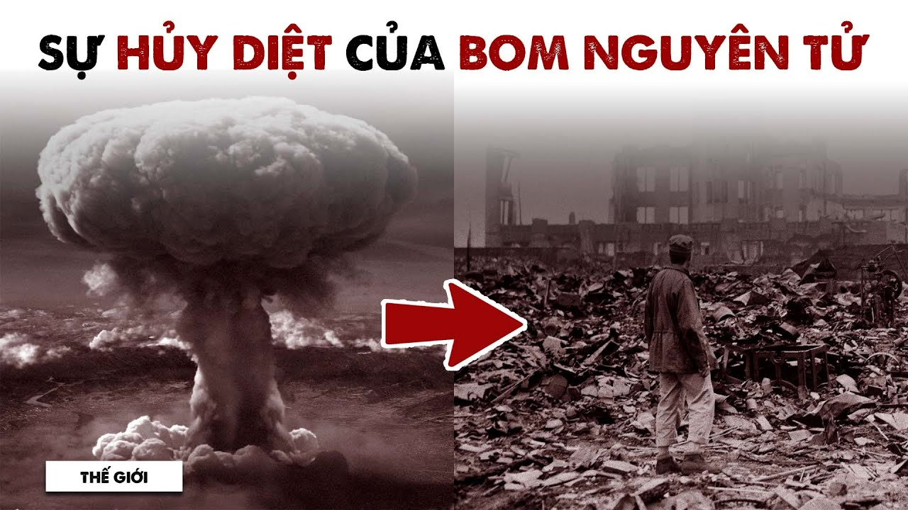
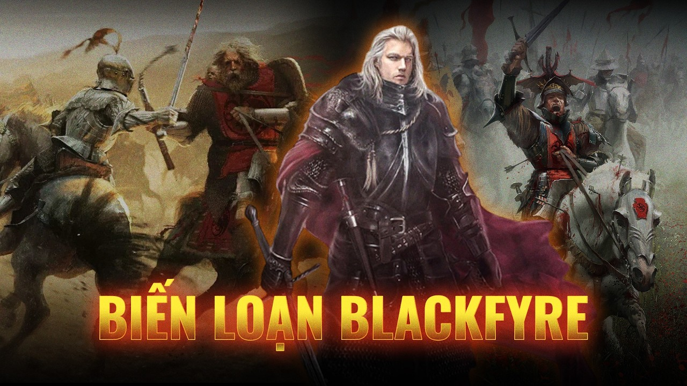
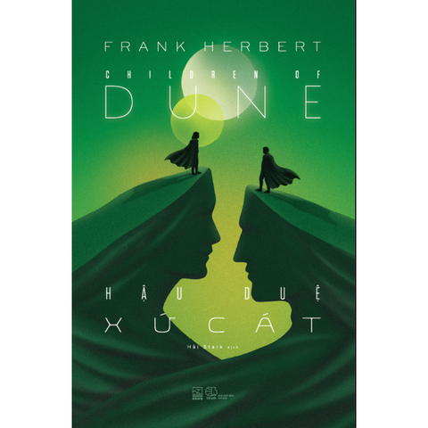

2879 TCN → 1945
Văn Lang tới Cách mạng tháng Tám
Video · 285 phút
Toàn bộ lịch sử Việt Nam đến năm 1945
Gần năm tiếng: dự án tham vọng nhất của kênh.
Xem videoSenior Content Writer & dịch giả. Lead Content kênh YouTube Spiderum. Người viết những câu chuyện lịch sử đã được xem hơn 30 triệu lượt.
Tám năm cầm bút. Top writer trên Spiderum, người góp tay xây Phê Game và Spiderum, Lead Content kênh YouTube Spiderum từ 2024. Tôi biến những thế kỷ dài nhất thành những câu chuyện người ta không muốn tua. Bên cạnh đó còn là dịch giả tự do, đã cộng tác với Nhã Nam, Rubik Books và First News – Trí Việt.
Eight years of writing. Top writer on Spiderum, part of the team that built Phê Game and Spiderum, Lead Content of the Spiderum YouTube channel since 2024. I turn the longest centuries into stories people refuse to skip. I am also a freelance literary translator, working with Nhã Nam, Rubik Books and First News – Trí Việt.
Gần năm tiếng: dự án tham vọng nhất của kênh.
Xem videoVị hoàng đế thống nhất Trung Hoa, đốt sách và xây trường thành.
Xem videoTách lịch sử khỏi tiểu thuyết: ba vị chúa, ba con đường tranh thiên hạ.
Xem videoSáu năm và bảy mươi triệu sinh mạng, nén lại mà không đứt mạch.
Xem video
Từ ngọn lửa đầu tiên tới câu hỏi của hôm nay: năng lượng nào cho tương lai?
Xem video
Và những thế giới chưa từng tồn tại.
Xem series
Frank Herbert · Nhã Nam
Đã phát hành · 8/2026James Clavell · Rubik Books
Cuối 2026First News – Trí Việt
2027